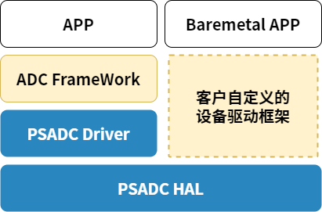

设计说明
15 Jan 2024
Read time: 3 minute(s)
源码说明
源代码位于 bsp/artinchip/：
-
bsp/artinchip/drv/psadc/drv_psadc.c，PSADC Driver 层实现
-
bsp/artinchip/hal/psadc/hal_psadc.c，PSADC HAL 层实现
-
bsp/artinchip/include/hal/hal_psadc.h，PSADC HAL 层接口头文件
模块架构
PSADC 驱动 Driver 层采用 RT-Thread 的 ADC 设备驱动框架，如果只使用 HAL 层也可以支持 Baremetal 方式的应用场景。

关键流程设计
初始化流程
PSADC 驱动的初始化接口通过 INIT_DEVICE_EXPORT(drv_psadc_init) 完成，会通过调用 ADC
子系统的接口 rt_hw_adc_register() 注册一个 ADC 设备。
PSADC 控制器的初始化过程，主要步骤有：
-
初始化模块的 clk
-
注册中断
-
初始化默认参数
-
向设备框架中注册 ADC 设备
中断处理流程

图 2. PSADC 单次采样模式的数据采集流程
PSADC 支持使用中断方式来读取数据，这样避免应用层的忙等待。
-
对于单次采样模式：当用户层触发 convert()接口，就会启动一次硬件去读数据
-
当硬件准备好数据，会产生一个中断
-
在中断处理函数中，用 flag 来区分是哪个通道有数据，逐个通道扫描将数据读出，会缓存到一个全局变量中
数据结构设计
struct aic_psadc_dev
属于 Driver 层内部使用的数据结构，管理 PSADC
控制器的设备资源：
struct aic_psadc_dev {
struct rt_adc_device *dev;
struct aic_psadc_ch *chan;
};
struct aic_psadc_ch
属于 HAL 层接口，记录单个 ADC
通道的配置信息：
struct aic_psadc_ch {
u8 id;
u8 available;
enum aic_psadc_mode mode;
u8 fifo_depth;
aicos_sem_t complete;
};Driver 层接口设计
以下接口是 PSADC 设备驱动框架的标准接口。
struct rt_adc_ops
{
rt_err_t (*enabled)(struct rt_adc_device *device, rt_uint32_t channel, rt_bool_t enabled);
rt_err_t (*convert)(struct rt_adc_device *device, rt_uint32_t channel, rt_uint32_t *value);
rt_uint8_t (*get_resolution)(struct rt_adc_device *device);
rt_int16_t (*get_vref) (struct rt_adc_device *device);
};其中的 get_vref()暂未支持。
| 函数原型 |
rt_err_t drv_psadc_enabled(struct rt_adc_device *dev,
rt_uint32_t ch, rt_bool_t enabled)
|
|---|---|
| 功能说明 | 使能一个 ADC 通道 |
| 参数定义 |
dev - 指向 ADC 设备
ch - 指定 ADC 通道的通道编号
enabled - 使能
|
| 返回值 | 0，成功； < 0，失败 |
| 注意事项 | - |
| 函数原型 |
rt_err_t drv_psadc_convert(struct rt_adc_device *dev,
rt_uint32_t ch, rt_uint32_t *value)
|
|---|---|
| 功能说明 | 读取一个 ADC 通道的当前数据 |
| 参数定义 |
dev - 指向 ADC 设备
ch - 指定 ADC 通道的通道编号
value - 用于保存返回的 ADC 数据
|
| 返回值 | 0，成功； < 0，失败 |
| 注意事项 | - |
| 函数原型 |
rt_err_t drv_psadc_resolution(struct rt_adc_device
*dev)
|
|---|---|
| 功能说明 | 获取 PSADC 控制器的采样精度 |
| 参数定义 |
dev - 指向 ADC 设备
|
| 返回值 | 12，表示 12bit 的采样精度 |
| 注意事项 | - |
HAL 层接口设计
HAL 层的函数接口声明存放在 hal_psadc.h 中，主要接口有：
void hal_psadc_enable(int enable); void hal_psadc_single_queue_mode(int enable); void hal_psadc_qc_irq_enable(int enable); int hal_psadc_ch_init(struct aic_psadc_ch *chan, u32 pclk); irqreturn_t hal_psadc_isr(int irq, void *arg); int hal_psadc_read(struct aic_psadc_ch *chan, u32 *val, u32 timeout); struct hal_psadc_ch *hal_psadc_ch_is_valid(u32 ch); void hal_psadc_set_ch_num(u32 num); void hal_psadc_status_show(struct aic_psadc_ch *chan);
Demo
此 Demo 是 psadc 命令的部分代码（详见
drv_psadc.c），可以作为 PSADC
设备的使用参考：
u32 ch = 0; struct rt_adc_device *dev = NULL; dev = (struct rt_adc_device *)rt_device_find("psadc"); if (!dev) { LOG_E("Failed to open %s device\n", "psadc"); return; } ret = rt_adc_enable(dev, ch); if (!ret) { val = rt_adc_read(dev, ch); printf("PSADC ch%d: %d\n", ch, val); } rt_adc_disable(dev, ch);